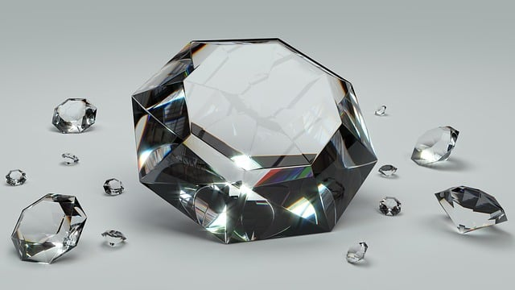

Maganelux was founded in 2020 with a clear vision: to provide customers with high-quality, timeless jewelry that they can trust. The idea for our business stemmed from the frustration of seeing many jewelry stores selling subpar, low-quality pieces that didn’t meet the expectations of discerning customers. As passionate jewelry lovers, we saw an opportunity to create a brand that offered superior craftsmanship, luxurious materials, and exceptional customer service. From day one, our mission has been to provide our customers with only the finest jewelry that is designed to last a lifetime. We understand the importance of a great investment in jewelry—whether it’s for a special occasion, an everyday accessory, or a cherished family heirloom—and we wanted to offer pieces that reflect both beauty and durability. At Maganelux, we take pride in offering a wide range of exquisite jewelry, including engagement rings, necklaces, bracelets, earrings, and watches, all made from premium materials like diamonds, gold, platinum, and sterling silver. Our team of skilled artisans and designers is dedicated to creating pieces that are both elegant and unique, making sure each item meets the highest standards of quality. We also believe in building lasting relationships with our customers, ensuring they feel supported throughout their shopping experience. With our stores in Burgersfort and Polokwane, Maganelux has quickly become a trusted name in the jewelry industry, and we are excited to continue providing exceptional jewelry for many years to come.

OUR VISION
At Maganelux, our vision is to be the leading jewelry brand known for exceptional quality, timeless designs, and unmatched customer satisfaction. To achieve this, we are committed to continuous growth and innovation, always striving to enhance our offerings and elevate the shopping experience. By using the finest materials, staying ahead of trends, and staying true to our core values of integrity and craftsmanship, we aim to create jewelry that not only meets but exceeds expectations. Our goal is to build lasting relationships with our customers, ensuring that every piece from Maganelux is a symbol of enduring beauty and excellence.
OUR MISSION
At Maganelux, we believe in the power of collaboration and the importance of achieving our goals together with our customers. Our vision is to create a community where we not only offer beautiful, high-quality jewelry but also help our customers achieve their personal milestones and celebrate life’s most precious moments. Whether it's finding the perfect engagement ring, a meaningful gift, or simply treating yourself to something special, we are here to support and guide you every step of the way. Together, we can build a future of success, joy, and unforgettable memories, making every goal and milestone a shared achievement.
HISTORY
At Maganelux, our history is built on a foundation of customer satisfaction and happiness. Since our founding in 2020, we have made it our top priority to deliver exceptional jewelry that not only meets but exceeds our customers’ expectations. We understand that purchasing jewelry is a deeply personal experience, and we have always strived to create a shopping environment where each customer feels valued and heard. Our commitment to quality and service has allowed us to build lasting relationships with our customers, ensuring they leave our store with pieces that bring them joy and confidence. From personalized consultations to expert guidance in choosing the perfect piece, we’ve consistently focused on creating memorable experiences. Through continuous improvement and feedback, we have refined our approach, ensuring that every visit to Maganelux is a positive one. We are grateful for the trust our customers place in us, and we remain dedicated to keeping them satisfied and happy for many years to come.